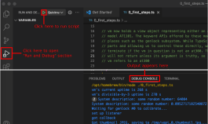

blade//runner can be monitored and controlled using either low-level access to its JSON/WebSocket interface, or using a JavaScript/TypeScript library called vapi that ships with blade//runner.
This setup demonstrates how to use vapi to perform several simple tasks. To read, modify or execute one of the example scripts, please select it by clicking one of the section icons above. This should open the corresponding source file in VisualStudio Code. To immediately execute said file, either navigate to the Run and Debug section and press the play button, or hit F5. All textual output produced by the script should then become visible in the debug console.
